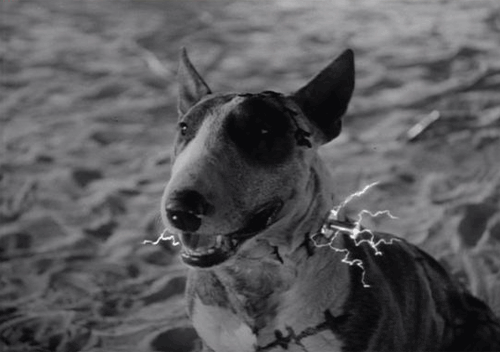

Vincent (1982)
Vincent es un cortometraje animado dirigido por Tim Burton, que narra la historia de un niño introvertido de 7 años que vive aislado en sus sueños. Es, además, un homenaje al actor estadounidense Vincent Price y a Edgar Allan Poe.
Frankenweenie (1984)

Frankenweenie es un mediometraje escrito y dirigido por Burton, que parodia u homenajea la conocida historia de Frankenstein. A causa del terror que contiene el film, el por entonces no tan reconocido director, consiguió ser despedido de Disney.
Pee-wee's Big Adventure (1985)
Pee-wee's Big Adventure es una película de comedia dirigida por Tim Burton en su debut en largometrajes. En ella, el protagonista emprende una aventura para recuperar su bicicleta robada. Esta, a su vez, es una parodia a la película italiana Ladrones de Bicicletas.
Beetlejuice (1988)
Beetlejuice es una comedia de terror dirigida por Burton. Esta película mezcla los géneros del humor e historia de fantasmas, siendo protagonizada por un personaje muerto inventado por Tim e interpretado por Michael Keaton.
Batman (1989)
En este film, dirigido por Tim Burton y protagonizado por Michael Keaton y Jack Nicholson, Batman vuelve a ser un héroe oscuro, dando pie a la saga Burton/Schumacher de 4 películas. La cinta estuvo inspirada en parte por los cómics The Killing Joke y The Dark Knight Returns.
Edward Scissorhands (1990)
Edward Scissorhands es una película dirigida por Tim Burton y escrita por Caroline Thompson, quien es una colaboradora recurrente del director. Este largometraje abarca géneros tan divergentes como la fantasía oscura y el romanticismo para narrar la historia de un hombre creado artificialmente que logra enamorarse de una mujer.
Batman Returns (1992)
Esta película es la secuela del exitoso film de 1989. La dirección de Tim Burton nos trae dos nuevos personajes interesantes: Pingüino (Danny DeVito) y Catwoman (Michelle Pfeiffer).
The Nightmare Before Christmas (1993)
The Nightmare Before Christmas es una película animada producida y escrita por Tim Burton. Y, si bien no la dirigió, es expuesta en esta página ya que es considerada la película más personal del director. Por contrato con Warner, Tim se vio obligado a derivar la dirección de esta película a Henry Selick, quien hizo un gran trabajo al representar sus ideas. Es una película muy musical.
Ed Wood (1994)
Ed Wood es una película cómica y biográfica coproducida y dirigida por Tim Burton y protagonizada por Johnny Depp. La cinta narra la vida del famoso director de cine bizarro y de culto, Ed Wood.
Mars Attacks! (1996)
Mars Attacks! es una película de comedia y ciencia ficción dirigida por Burton. La historia se basa en la serie de cromos Mars Attacks de la marca Topps, vigente en la década del 60. Esta, a su vez, es una parodia de las películas clase B de los años 50. El film cuenta con un reparto espléndido con estrellas como Jack Nicholson, Danny DeVito, Natalie Portman y Jack Black.
Sleepy Hollow (1999)
Es una película de aventuras dirigida por Burton y protagonizada por Johnny Depp que se basa en el relato de terror La Leyenda del Jinete Sin Cabeza. Recibió un Oscar a la mejor dirección artística del año 2000.
Planet of the Apes (2001)

Dirigida por Tim Burton y protagonizada por Mark Wahlberg y Helena Bonham Carter, entre otros, esta película desarrolla una nueva versión de El Planeta de los Simios, siendo la sexta franquicia.
Big Fish (2003)

Es una película con carencia gótica dirigida por Burton y escrita por John August. Está basada en la novela Big Fish: A Novel of Mythic Proportions, de Daniel Wallace. Steven Spielberg se iba a hacer cargo de esta cinta, pero, tras la muerte de su padre, se delegó a Tim.
Charlie and the Chocolate Factory (2005)
Esta película está dirigida por Tim Burton y es protagonizada por Johnny Depp, como Willy Wonka, y Freddie Highmore, como Charlie. Es recibida como la segunda adaptación de la novela del 64.
Corpse Bride (2005)
Es una película animada de fantasía dirigida y producida por Tim basada en un cuento popular ruso del siglo XIX. Junto a la característica técnica de Stop Motion del director, Johnny Depp y Helena Bonham Carter dan voz a los personajes principales.
Sweeney Todd: The Demon Barber of Fleet Street (2007)
Es una película musical, dirigida por Tim Burton y protagonizada por Johnny Depp y Helena Bonham Carter, que adapta cinematográficamente el musical homónimo de Stephen Sondheim Hugh Wheeler.
Alice in Wonderland (2010)
Es una película de fantasía dirigida por Tim Burton y producida por Walt Disney Pictures. Está inspirada en los libros Las aventuras de Alicia en el país de las maravillas y A través del espejo y lo que Alicia encontró allí, ambos de Lewis Carroll, y en la película animada de Disney de 1951 Alicia en el país de las maravillas.
Dark Shadows (2012)
Es una comedia cinematográfica de drama sobrenatural basada en la telenovela gótica estadounidense Sombras Tenebrosas. Dirigida por Tim Burton, esta cinta cuenta con un elenco con grandes nombres como Johnny Depp, Helena Bonham Carter y Michelle Pfeiffer.
Frankenweenie (2012)
Esta es una película animada dirigida por Tim y producida por Walt Disney Pictures. Se trata de un remake del cortometraje mencionado anteriormente, esta vez animada con stop motion.
Big Eyes (2014)
Es una película biográfica dirigida por Tim. Está basada en una historia real sobre la pintora Margaret Keane, a quien su marido robó la autoría de sus cuadros durante años.
Miss Peregrine's Home for Peculiar Children (2016)
Es una película de aventuras y fantasía dirigida por Burton y escrita por Jane Goldman. Está basada en la novela de mismo nombre de Ransom Riggs. Cuenta con grandes actores como Samuel L. Jackson y Asa Butterfield.
Dumbo (2019)
Es un film de aventuras y fantasía dirigido por Tim Burton y guionado por Ehren Kruger. Está basado en el relato homónimo escrito por Helen Aberson y Harold Pearl, y es en gran parte una adaptación de la película animada de 1941. Cuenta con un deslumbrante elenco, con nombres como Eva Green, Michael Keaton y Danny DeVito.